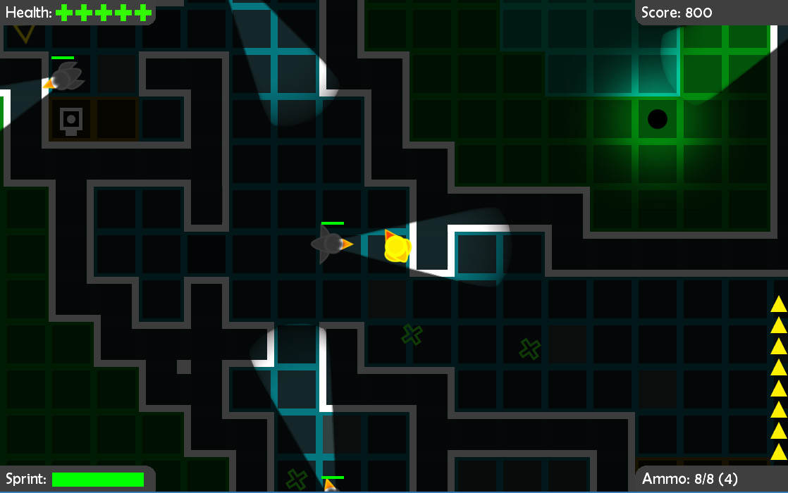
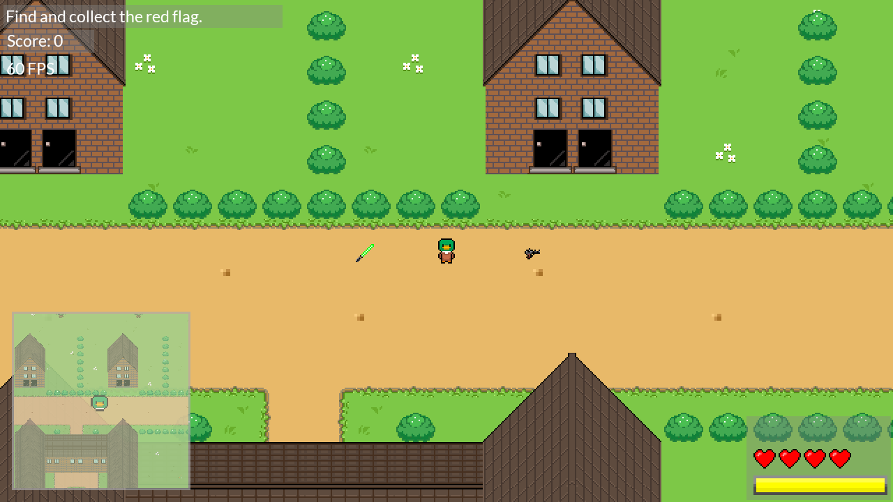

Assessment Files
You can find all the documentation related to the assessments here.
Quackers
The nefarious supervillain known as Goosey Goose has taken over the University of York. He has enslaved all the students and staff using the mind controlling device known as B.R.A.I.N (Brain Altering Interface Network). You, as an agent of B.E.A.K (Best Ever Agent Korporation) , are tasked to stop Goosey and his evil henchmen. You must destroy the B.R.A.I.N 's and free the humans using stealth and hacking abilities.
Assessment 1:
Documentation for Assessment 1 (.zip, ~1.5 MB)
Assessment 2:
Documentation for Assessment 2
Executable game file (.jar, ~8.2 MB)
Big Duck On Campus
Become the most OP Duck in the history of Duck-kind!
B.D.O.C. is a game that rips-off is inspired by The Binding of Isaac.
Complete each level and gain new abilities in your quest for absolute power.
You can also gain a spiffing pair of sunglasses!
Assessment 3:

Documentation for Assessment 3
Executable game file (.jar)
Super Duck Invaders
The latest game. Check out the home page for more details!
Assessment 4:
Documentation for Assessment 4
Executable game file (.jar)